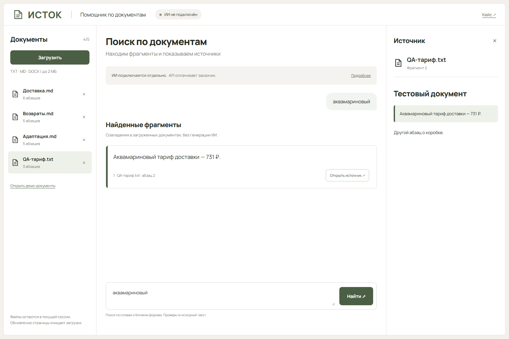
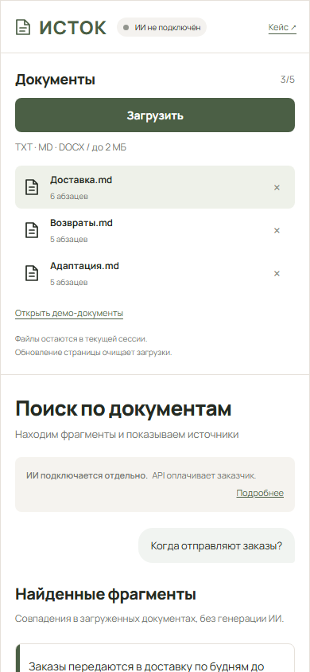

Документы
В публичном демо — TXT и Markdown в UTF-8. DOCX проверялся в отдельном исходном прототипе с серверным обработчиком, но не входит в браузерную версию. До пяти файлов, лимиты объёма и понятные ошибки загрузки.
Прототип интерфейса ИИ-помощника с рабочим локальным поиском. Загруженный текст, вопрос, найденные фрагменты и проверяемый источник — в одном рабочем пространстве.
Попробовать поиск ↗
В публичном демо — TXT и Markdown в UTF-8. DOCX проверялся в отдельном исходном прототипе с серверным обработчиком, но не входит в браузерную версию. До пяти файлов, лимиты объёма и понятные ошибки загрузки.
Локальное сопоставление слов и близких русских форм. Цитаты извлекаются из переданного текста, а не придумываются.
Имя файла, номер фрагмента и выделение точного текста. Если совпадений нет, интерфейс сообщает об этом прямо.

Публичное демо обрабатывает загрузки и вопросы в памяти вкладки, без отправки на сервер и без браузерного хранилища. После обновления остаются только модельные документы. Удаление файла очищает относящиеся к нему результаты.
Файлы и вопросы никуда не отправляются. PDF, сканы и OCR в текущую версию не входят.

Модельные документы созданы для портфолио. Текущий поиск не понимает документы как языковая модель и не гарантирует нахождение ответа на любой вопрос.
Сейчас работает только локальный поиск, без генерации ИИ. В клиентском проекте модель подключается отдельно: аккаунт API, лимиты расходов и передачу документов согласуют с заказчиком. Расходы на API оплачивает заказчик отдельно от разработки. Подписка для общения в чате приложением не используется. Живой модельный API в этом кейсе не реализован и не проверялся.